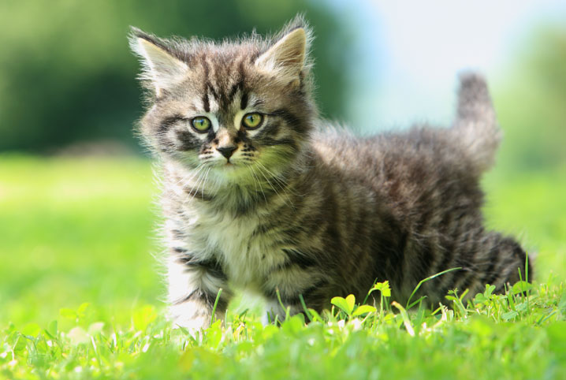

8 Curiosidades sobre gatos: verdade X mito
Os gatos estão entre os humanos há milhares de anos, e muitas histórias rondam sua jornada. Conheça algumas curiosidades sobre gatos
Existem uma série de histórias sobre esses gatinhos que estão no mundo há muitos anos., mas saiba que muitas dessas histórias não passam de mitos. Nesse sentido, se você tem um gatinho como companheiro, é importante saber o que é mito e o que é verdade como uma forma até mesmo de melhorar a relação gato-tutor.
Tudo sobre gatos: mito X verdade
Por estarem em nosso mundo há muitos anos, os gatos possuem diversas curiosidades que podem se dividir entre mitos e verdades, e nós iremos apontar algumas para que você, tutor de gatinhos ou até mesmo um amante de animais, possa ficar por dentro da história desses animais inteligentes e super organizados.
Mitos
1. Um dos maiores mitos é que o
2. Na Idade Média, mais especificamente no Ocidente, as pessoas acreditavam que cruzar com um gato preto na rua dava azar; já no Japão eles são símbolos de muita sorte.
3.Gatos tem 7 vidas? Esse é um dos maiores mitos da história dos gatos! Mas infelizmente não, eles só possuem uma vida e a expectativa é de até 15 anos, mas isso vai depender de muitos fatores ao longo da vida.
4. Outro mito é de que os gatos não podem ser adestrados. Todo animal pode ser adestrado, basta ter muita paciência e as técnicas certas para essa tarefa. Esse pode ser um processo demorado, mas eles podem sim aprender diversos comandos.
Verdades
1. Essa talvez seja uma curiosidade que parece mito, mas não é: gatos brancos de olhos azuis são surdos. O que dizem os estudos é que os gatos de pelagem completamente branca e com olhos azuis são surdos de nascença. Isso acontece pela presença do gene W (“white”, branco em português), que acaba transportando esse probleminha para os gatos brancos. Mas não se preocupe, essa condição não se adequa a todos os gatos dessa cor, porque o gene age de maneiras diferentes nos gatos
2. Quando os gatinhos são castrados, a tendência é que eles fiquei gordinhos, atingindo até a obesidade, em alguns casos. Isso porque a castração modifica o metabolismo, por isso é importante que o gatinho receba uma alimentação balanceada para evitar que atinja a obesidade. No mercado pet existem diversas rações próprias para gatinhos castrados, elas são ótimas auxiliadoras nesse processo.
3. Os gatinhos possuem uma forma diferente de demonstrar afeto, por isso, é comum dizer que os gatos são traiçoeiros, porque ao mesmo tempo que ele te lambe para fazer carinho, é comum ele dar uma mordidinha de leve logo depois. Mas isso não é uma agressão, mas sim a forma que ele tem de demonstrar afeto pelo tutor ou por quem está oferecendo carinho para ele.
4. Miar e ronronar são as formas que o gatinho tem para se comunicar com o seu tutor, para mostrar algo que está errado ou até mesmo para chamar atenção. Mas se o seu gatinho ronronar após ganhar um carinho ou até mesmo depois de comer, significa que ele está feliz e tranquilo.
5. No meio felino, os gatos pretos tem mais sorte que seus amiguinhos de outras colorações, segundo uma pesquisa sobre gatos realizada pelo Instituto Nacional de Saúde dos EUA, onde o estudo explica que a coloração escura dos gatos pretos seriam responsáveis por torná-los imunes ao vírus do HIV felino.
Nomes de gatos de estimação
Se você quer se tornar um tutor de um felino e ainda não sabe qual o melhor nome dar para ele, você pode conferir algumas dicas aqui para batizar o seu gatinho!
Se você é uma pessoa ligada à cultura pop, você pode batizar o seu gatinho com nome de gatos famosos dos desenhos animados, filmes e até séries!
Um dos gatos mais famosos é o Garfield, o gatinho que amava comer e curtir seu dia descansando, mas que também amava muito seu tutor e seu amiguinho Odie, o cachorro mais brincalhão.
Outro gatinho muito famoso dos desenhos animados é o Frajola, um gatinho preto e branco que adorava aprontar muito em cada episódio dos desenhos.
Agora, você se lembra da série adolescente “Sabrina, Aprendiz de Feiticeira”? Se você era fã da série, com certeza se lembra do gatinho mágico Salem, que não tinha papas na língua e adorava fingir que era a tutora Sabrina ao telefone, para falar com os namorados dela.
Outro gatinho muito famoso é o Pelusa do filme Stuart Little! Um gatinho branco, super peludo e de olhos azuis, que se sentia o rei da família e também adorava passar o dia descansando e comendo.
Idade Felina
Enquanto um ser humano leva em torno de nove meses para nascer, para um gato a gestação leva em média 65 dias. O primeiro ano da vida de um gato equivale a 15 anos da vida humana, dois anos equivalem a 24 e, daí por diante, são adicionados quatro “anos humanos” para cada ano felino.